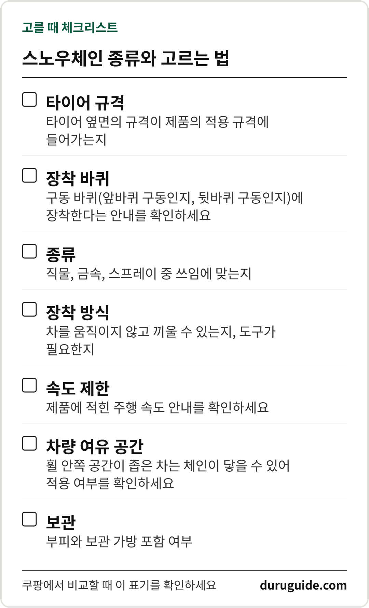

스노우체인 종류와 고르는 법, 직물·금속·스프레이 차이
이런 상황이죠
눈 소식이 있는 날, 트렁크에 체인이 없다는 게 떠올라 갑자기 불안해질 때가 있어요. 스키장이나 산간 지역으로 가는 길에는 체인을 갖추도록 안내하는 곳도 있어요. 막상 찾아보면 직물, 금속, 스프레이처럼 종류가 많아서 무엇이 내 차에 맞는지 알기 어려워요.
왜 생기나
눈길이나 빙판에서는 타이어와 노면 사이의 마찰이 크게 줄어요. 그래서 출발이 안 되거나 미끄러지는 일이 생겨요. 체인은 타이어 바깥에 걸어 마찰을 보태는 도구예요. 종류에 따라 구조와 쓰임이 달라서, 쓰는 상황에 맞지 않는 것을 고르면 막상 필요할 때 장착하기 어렵거나 효과가 부족할 수 있어요.
사기 전에 먼저 해볼 것
- 겨울용 타이어를 쓰고 있는지 확인해요. 겨울용 타이어는 낮은 기온과 눈길에 맞게 만들어져 있어서, 상황에 따라 체인 없이도 도움이 돼요. 다만 도로 상황에 따라 체인이 필요한 곳도 있으니 안내를 따르세요.
- 눈길 운전을 줄일 수 있는지 봐요. 눈이 많이 오는 날에는 대중교통을 이용하거나 출발을 늦추는 것도 방법이에요.
- 타이어 규격을 미리 적어 둬요. 타이어 옆면에 폭, 편평비, 인치가 적혀 있어요. 체인은 이 규격에 맞아야 해요.
- 차량 취급설명서에서 체인 안내를 확인해요. 차에 따라 장착할 수 있는 종류나 제한이 있을 수 있어요.
- 구입 후에는 집에서 한 번 연습해요. 눈 내리는 길가에서 처음 장착하면 어렵고 위험해요. 맑은 날 평평한 곳에서 미리 해 보세요.
고를 때 체크리스트
| 확인 항목 | 보는 기준 |
|---|---|
| 타이어 규격 | 타이어 옆면의 규격이 제품의 적용 규격에 들어가는지 |
| 장착 바퀴 | 구동 바퀴(앞바퀴 구동인지, 뒷바퀴 구동인지)에 장착한다는 안내를 확인하세요 |
| 종류 | 직물, 금속, 스프레이 중 쓰임에 맞는지 |
| 장착 방식 | 차를 움직이지 않고 끼울 수 있는지, 도구가 필요한지 |
| 속도 제한 | 제품에 적힌 주행 속도 안내를 확인하세요 |
| 차량 여유 공간 | 휠 안쪽 공간이 좁은 차는 체인이 닿을 수 있어 적용 여부를 확인하세요 |
| 보관 | 부피와 보관 가방 포함 여부 |
종류별로 이렇게 달라요
직물형은 타이어에 씌우는 방식이에요. 비교적 가볍고 끼우기 쉬운 편이라고 안내되는 경우가 많아요. 눈이 쌓인 길에서 비상용으로 두기에 알맞지만, 마른 도로를 달리면 빨리 닳을 수 있어요.
금속형은 쇠사슬이나 케이블 구조예요. 얼음이나 눈이 많은 길에서 쓰는 쪽에 가깝고, 장착이 조금 더 번거로울 수 있어요. 실제 효과와 소음은 제품에 따라 달라요.
스프레이형은 타이어에 뿌려서 잠깐 마찰을 보태는 용도예요. 효과가 오래가지 않고 체인을 대신하기는 어려워요. 체인 착용이 의무로 안내된 구간에서는 인정되지 않을 수 있으니 안내를 확인하세요.
체인을 걸었다고 안전해지는 건 아니에요. 속도를 줄이고 앞차와 간격을 넓게 두세요. 체인을 쓴 뒤에는 마른 노면에서 오래 달리지 마세요.
추천 제품 찾기
먼저 내 차의 타이어 규격과 구동 방식, 주로 달릴 길을 정리해 두세요. 그다음 쿠팡에서 적용 규격, 체인 종류, 장착 방식, 속도 제한 표기를 기준으로 비교해 보세요. 현재 가격은 쿠팡에서 확인해 주세요.

위 표의 표기를 비교해 보세요.
현재 가격은 쿠팡에서 확인해 주세요.
이 포스팅은 쿠팡 파트너스 활동의 일환으로, 이에 따른 일정액의 수수료를 제공받습니다.